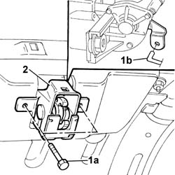
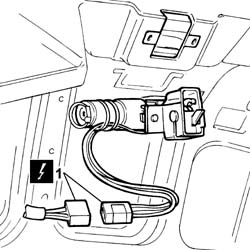

7025B38 Boot lid LOCK - R.R.
- Path
- Procedures > 70 FITTINGS > 7025 COMPARTMENT LIDS > 7025B BOOT LID > 7025B38 Boot lid LOCK - R.R.
- Kind
- repair procedure (removal / refitting; the operation number is the code)
- Applies to
- all engines; all production periods
- Interactive page
- https://sloeber94.github.io/elrnDB-lThss/en/#/80241
Applies to: all engines; all production periods
 Removing
Removing
 Refitting
Refitting- Disconnect the negative battery terminal.
See in Op. 7025B18 Boot LID LINING - R.R.
1. Undo the bolts (1a) and the boot lid opening idler (1b).
2. Extract the lock from the housing.

Applies to: all engines; all production periods
1. Disconnect the electrical connector.
 | Description | Connector |
|---|---|---|
1 | Boot lock geared motor | N057 |

Applies to: all engines; all production periods
Refitting
Removing- Connect the electrical connector.
| Description | Connector |
|---|---|---|
. | Boot lock geared motor | N057 |
Applies to: all engines; all production periods
- Fit the boot lid lock in the housing and connect the opening idler.
- Tighten the bolts fixing the boot lid lock to torque.
 | Value - daNm | Fastening | Component | Ø |
|---|---|---|---|---|
. | 1.6 | Bolt | BOOT LID LOCK | M8 |
See in Op. 7025B18 Boot LID LINING - R.R.
- Connect the negative battery terminal.